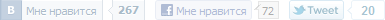

Спойлер
Спойлер«Аполло́н 18»— американский криптоисторический псевдодокументальный фантастический фильм ужасов с мотивами альтернативной истории и конспирологической теории «лунного заговора». На экраны кинотеатров США фильм вышел 2 сентября 2011 года, собрав более 8 млн долларов в первый уик-энд. Суммарные сборы от проката по всему миру составили более 25 млн долларов. Премьера фильма в России состоялась 1 сентября 2011 года.
В декабре 1974 года экипажу ранее отменённой миссии Аполлон-18 сообщают, что миссия возобновлена, но теперь это секретная миссия министерства обороны США. Командир Нейтан Уокер, подполковник Джон Грей и капитан Бенджамин Андерсон стартуют к Луне с целью размещения PSD-5 — установок предупреждения о ракетном нападении со стороны СССР.
Кадры домашнего видео, снятого до полёта, показывают астронавтов на барбекю с друзьями и семьями. В «Официальном досье» говорится, что астронавты погибли вследствие различных аварий, в результате которых их тела не были обнаружены. Эпилог обьясняет, что многие из образцов лунных пород, доставленных в ходе предыдущих миссий Аполлон, были украдены или числятся пропавшими без вести…



 Кадры из фильма
Кадры из фильма


 Трейлер
Трейлер Коментарии
Коментарии